Pre-lecture materials
Read ahead
Read ahead
Before class, you can prepare by reading the following materials:
- Mine and Julia’s talk about Collaborating with Quarto
- Joe Cheng’s Shiny Talk
- Quarto Publishing System: https://quarto.org
- r4ds book: https://r4ds.hadley.nz/quarto
Acknowledgements
Material for this lecture was borrowed and adopted from
- r4ds book: https://r4ds.hadley.nz/quarto
- Ted Laderas’s talk on Quarto/RMarkdown - What’s Different?
- Quarto Publishing System: https://quarto.org
Learning objectives
Learning objectives
At the end of this lesson you will:
- Be able to describe reasons why having a personal website can be useful.
- Recognize what is Quarto and how it’s different from RMarkdown.
- Be able to create a Quarto project and Quarto website.
Introduction
A professional web presence through a personal website can be powerful given the world we live in with much of our lives on the web (e.g. zoom meetings).
There are many great tools to be able to help you get started on building a personal website.
Reasons why creating a personal website can be helpful
- A website gives you a home to build a brand for yourself and summarize the work you do.
- You can connect with broader audiences.
- A website can give you broader professional visibility.
- Creating a website demonstrates literacy with working with websites.
- In addition to the scholarship you are creating, a website gives an opportunity for others to connect with you (rather than just learn about your scholarship).
- It helps future employers learn about who you are.
In Statistical Computing (140.776), we learned how to create websites with things like blogdown, distill, or just R Markdown.
Here, we will learn about Quarto and how it can be used to create many types of products, including websites!
Hello, Quarto!
Introduction
Quarto provides a unified authoring framework for data science, combining your code, its results, and your prose.
Quarto documents are fully reproducible and support dozens of output formats, like PDFs, Word files, presentations, and more.
Quarto files are designed to be used in three ways:
- For communicating to decision makers, who want to focus on the conclusions, not the code behind the analysis.
- For collaborating with other data scientists (including future you!), who are interested in both your conclusions, and how you reached them (i.e. the code).
- As an environment in which to do data science, as a modern day lab notebook where you can capture not only what you did, but also what you were thinking.
Important
Quarto is a command line interface tool, not an R package.
This means that help is, by-and-large, not available through ?.
And not to add to the confusion, there is an quarto R package that has helper functions for you to use in R to e.g. check the Quarto version installed, etc.
Formally, Quarto is a publishing system built on Pandoc that allows users to create dynamic content using R, Python, Julia, and ObservableJS (with plans to add more languages too!).
Art by Allison Horst. Be sure to check out the rest of Allison’s seriously cute Quarto penguin art in the #rstudioconf2022 keynote talk, Hello Quarto, by Julie Lowndes & Mine Çetinkaya-Rundel!
Prerequisites
You need the Quarto command line interface (Quarto CLI), but you don’t need to explicitly install it or load it, as RStudio automatically does both when needed.
- https://quarto.org/docs/get-started
- https://formulae.brew.sh/cask/quarto (this is my preferred way using home brew)
Quarto basics
This is a Quarto file – a plain text file that has the extension .qmd:
---
title: "Diamond sizes"
date: 2022-09-12
format: html
---
```{r}
#| label: setup
#| include: false
library(tidyverse)
smaller <- diamonds |>
filter(carat <= 2.5)
```
We have data about `r nrow(diamonds)` diamonds.
Only `r nrow(diamonds) - nrow(smaller)` are larger than 2.5 carats.
The distribution of the remainder is shown below:
```{r}
#| label: plot-smaller-diamonds
#| echo: false
smaller |>
ggplot(aes(carat)) +
geom_freqpoly(binwidth = 0.01)
```
Three basic sections of a
.qmd file
It contains three important types of content:
- An (optional) YAML header surrounded by
---s. - Chunks of R code surrounded by
```. - Text mixed with simple text formatting like
# headingand_italics_.
When you open a .qmd, you get a notebook interface where code and output are interleaved (aka literate programming).
When you render the document, Quarto sends the .qmd file to knitr, https://yihui.name/knitr, which executes all of the code chunks and creates a new markdown (.md) document which includes the code and its output.
The markdown file generated by knitr is then processed by pandoc, https://pandoc.org, which is responsible for creating the finished file.
The advantage of this two step workflow is that you can create a very wide range of output formats.

What is Quarto for someone who uses RStudio?
If you’re an R Markdown user, you might be thinking “Quarto sounds a lot like R Markdown”. You’re not wrong!
Quarto unifies the functionality of many packages from the R Markdown ecosystem (rmarkdown, bookdown, distill, etc.) into a single consistent system as well as extends it with native support for multiple programming languages like Python and Julia in addition to R.
Important
For the purposes of the course, I am assuming you are already familiar with the Markdown language and working with RMarkdown files as this was covered in 140.776.
Please see RMarkdown for questions on this topic.
In a way, Quarto reflects everything that was learned from expanding and supporting the R Markdown ecosystem over a decade.
Tip
Coming from the perspective of someone who uses RStudio, this is another way of thinking about Quarto:
Quarto is a multi-language, next-generation version of R Markdown from RStudio, and includes dozens of new features and capabilities while at the same being able to render most existing Rmd files without modification.
R users have long loved RMarkdown for combining prose, code, and outputs into single “knitted” documents. Quarto extends all of RMarkdown’s best features (plus many more!) to additional languages.
You can edit code and markdown in RStudio just as you would with any computational document (e.g. R Markdown), and preview the rendered document in the Viewer tab as you work.
The following is a Quarto document with the extension .qmd (on the left) along with its rendered version as HTML (on the right). You could also choose to render it into other formats like PDF, MS Word, etc.

This is the basic model for Quarto publishing—take a source document and render it to a variety of output formats.
Great intro Quarto tutorials
Here are a series of tutorials designed to introduce you to Quarto with RStudio
Quarto file format
Quarto uses one file format (read more here in Quarto’s documentation) and one syntax to create many different types of high-quality outputs:
- Documents
- Websites
- Publications
- Blogs
- Slides / presentations
- Books
- Dashboards
Quarto summary
- Create dynamic content with Python, R, Julia, and Observable.
- Author documents as plain text markdown or Jupyter notebooks.
- Publish high-quality articles, reports, presentations, websites, blogs, and books in HTML, PDF, MS Word, ePub, and more.
- Author with scientific markdown, including equations, citations, crossrefs, figure panels, callouts, advanced layout, and more.
.qmd files
Quarto files end in a .qmd. This is short for quarto markdown.
Note
These files are decoupled from RStudio IDE and there are plugins to work with .qmd files for
- VSCode
- JupyterLab
- RStudio
Rendering
Use the  Render button in the RStudio IDE to render the file and preview the output with a single click or keyboard shortcut (⇧⌘K).
Render button in the RStudio IDE to render the file and preview the output with a single click or keyboard shortcut (⇧⌘K).

If you prefer to automatically render whenever you save, you can check the Render on Save option on the editor toolbar. The preview will update whenever you re-render the document. Side-by-side preview works for both HTML and PDF outputs.

Note
Documents can also be rendered from the R console via the quarto package:
Code run in the R Console
install.packages("quarto")
quarto::quarto_render("hello.qmd")And documents can also be rendered from the command line:
Code run in the command line
# render single document (always executes code)
quarto render document.qmd
# render project subdirectory (always executes code)
quarto render articlesHow rendering works
When you render a Quarto document, first knitr executes all of the code chunks and creates a new markdown (.md) document which includes the code and its output. The markdown file generated is then processed by pandoc, which creates the finished format. The Render button encapsulates these actions and executes them in the right order for you.
When rendering, Quarto generates a new file that contains selected text, code, and results from the .qmd file. The new file can be an HTML, PDF, MS Word document, presentation, website, book, interactive document, or other format.
Authoring
In the image below we can see the same document in the two modes of the RStudio editor: visual (on the left) and source (on the right). RStudio’s visual editor offers an WYSIWYM authoring experience for markdown. For formatting (e.g. bolding text) you can use the toolbar, a keyboard shortcut (⌘B), or the markdown construct (**bold**).
The plain text source code underlying the document is written for you and you can view/edit it at any point by switching to source mode for editing. You can toggle back and forth these two modes by clicking on Source and Visual in the editor toolbar (or using the keyboard shortcut ⌘⇧ F4).

How does multi-language support work?
Quarto supports multiple languages
These languages include
- R
- Python
- Julia
- Observable
Quarto can also interchange between languages using Apache Arrow.
The idea behind how quarto supports multi-language code is that the code output is “frozen” by default after it is rendered.
In this way, code output is not recomputed, unless you want it to.
R Markdown vs Quarto
Some high-level differences include
- Standardized YAML across formats
- Decoupled from RStudio
- More consistent presentation across formats
- Tab Panels
- Code Highlighting
Code block options
Another noticeable difference are options for code blocks. Rather than being in the header of the code block, options are moved to within the code block using the #| (hash-pipe) for each line.
This is a code block for R Markdown:
```{r setup, include=FALSE}
library(tidyverse)
library(tidytext)
```This is a code block for Quarto:
```{r}
#| label: "setup"
#| include: false
library(tidyverse)
library(tidytext)
```Output Options
There are a wide variety of options available for customizing output from executed code. All of these options can be specified either globally (in the document front-matter) or per code-block. For example, here’s a modification of the Python example to specify that we don’t want to “echo” the code into the output document:
---
title: "My Document"
execute:
echo: false
jupyter: python3
---Note that we can override this option on a per code-block basis. For example:
```{python}
#| echo: true
import matplotlib.pyplot as plt
plt.plot([1,2,3,4])
plt.show()
```Code block options available for customizing output include:
| Option | Description |
|---|---|
eval |
Evaluate the code chunk (if false, just echos the code into the output). |
echo |
Include the source code in output |
output |
Include the results of executing the code in the output (true, false, or asis to indicate that the output is raw markdown and should not have any of Quarto’s standard enclosing markdown). |
warning |
Include warnings in the output. |
error |
Include errors in the output (note that this implies that errors executing code will not halt processing of the document). |
include |
Catch all for preventing any output (code or results) from being included (e.g. include: false suppresses all output from the code block). |
Here’s a Knitr example with some of these additional options included:
---
title: "Knitr Document"
execute:
echo: false
---
```{r}
#| warning: false
library(ggplot2)
ggplot(airquality, aes(Temp, Ozone)) +
geom_point() +
geom_smooth(method = "loess", se = FALSE)
```
```{r}
summary(airquality)
```
Tip
When using the Knitr engine, you can also use any of the available native options (e.g. collapse, tidy, comment, etc.). See the Knitr options documentation for additional details. You can include these native options in option comment blocks as shown above, or on the same line as the {r} as shown in the Knitr documentation.
Margin content
You can place content within the right margin of Quarto document. For example, here we use the .column-margin class to place an image in the margin:
::: {.column-margin}
We know from *the first fundamental theorem of calculus* that for $x$ in $[a, b]$:
$$\frac{d}{dx}\left( \int_{a}^{x} f(u)\,du\right)=f(x).$$
:::We know from the first fundamental theorem of calculus that for \(x\) in \([a, b]\):
\[\frac{d}{dx}\left( \int_{a}^{x} f(u)\,du\right)=f(x).\]
Margin Figures
Figures that you create using code cells can be placed in the margin by using the column: margin code cell option.
If the code produces more than one figure, each of the figures will be placed in the margin.
```{r}
#| label: fig-mtcars
#| fig-cap: "MPG vs horsepower, colored by transmission."
#| column: margin
library(ggplot2)
mtcars2 <- mtcars
mtcars2$am <- factor(
mtcars$am, labels = c('automatic', 'manual')
)
ggplot(mtcars2, aes(hp, mpg, color = am)) +
geom_point() +
geom_smooth(formula = y ~ x, method = "loess") +
theme(legend.position = 'bottom')
```
Margin Tables
You an also place tables in the margin of your document by specifying column: margin.
```{r}
#| column: margin
knitr::kable(
mtcars[1:6, 1:3]
)
```| mpg | cyl | disp | |
|---|---|---|---|
| Mazda RX4 | 21.0 | 6 | 160 |
| Mazda RX4 Wag | 21.0 | 6 | 160 |
| Datsun 710 | 22.8 | 4 | 108 |
| Hornet 4 Drive | 21.4 | 6 | 258 |
| Hornet Sportabout | 18.7 | 8 | 360 |
| Valiant | 18.1 | 6 | 225 |
Code line numbers
If you want to display line numbers alongside the code block, add the code-line-numbers option. For example:
format:
html:
code-line-numbers: trueHere’s how a code block with line numbers would display throughout the document:
library(ggplot2)
mtcars2 <- mtcars
mtcars2$am <- factor(
mtcars$am, labels = c('automatic', 'manual')
)
ggplot(mtcars2, aes(hp, mpg, color = am)) +
geom_point() +
geom_smooth(formula = y ~ x, method = "loess") +
theme(legend.position = 'bottom')You can also enable line numbers for an individual code block using the code-line-numbers attribute.
Should you switch to quarto?
Should you switch to Quarto? Not necessarily. If you find R Markdown meet your need, you can definitely stay there. It is not imperative to switch. - Yihui Xie
Quarto demo
Here we will demo create two Quarto products:
- A Quarto project
- A Quarto website
To get started with your own .qmd file, select File > New File > Quarto Document… in the menu bar. RStudio will launch a wizard that you can use to pre-populate your file with useful content that reminds you how the key features of Quarto work.
Project
Here are the general steps for creating a Quarto project:
- Create a new Quarto project
- Edit
_quarto.ymlfile - Add / delete relevant content
- Render the project
Website
Here are the general steps for creating a Quarto website:
- Create a new Quarto project
- Edit
_quarto.ymlfile - Add / delete relevant content
- Render the website
- Deploy the website
Deploying a website
quarto publish can push and update a number of different kinds of webhosts. You will need credentials to publish to each of these.
quarto publish gh-pages # GitHub Pages
quarto publish quarto-pub # Quarto.pub
quarto publish netlify # Netlify
quarto publish connect # RStudio ConnectFreeze Results and avoid recomputing
Freezing code output is generally used when you have either
- A large number of collaborators or
- Many computational documents created over a longer period of time
- A project with different types of file formats from different languages (e.g.
.qmd,.ipynb,.Rmd)
In the above cases, it can be challenging to fully re-execute every document when you render the site.
This could be because some documents have esoteric or environment-specific requirements (e.g. require access/authentication to a data source) or due to general fragility of dependencies over time.
Using freeze ensures that you can always reproducibly render your site.
The computational results of documents executed with freeze are stored in the _freeze/ directory, and re-used when needed to fulfill document renders.
You should check the contents of _freeze/ into version control so that others rendering the project don’t need to reproduce your computational environment to render it in their environment.
Note
You will still want to take care to fully re-render your project when things outside of source code change (e.g. input data).
You can remove previously frozen output by deleting the _freeze folder at the root of your project.
For example, consider the _quarto.yml file.
One argument in the file is the freeze option to denote that computational documents should never be re-rendered during a global project render, or alternatively only be re-rendered when their source file changes:
project:
title: "qmd_rmd"
type: website
output-dir: docs
execute:
freeze: true # never re-render during project renderproject:
title: "qmd_rmd"
type: website
output-dir: docs
execute:
freeze: auto # re-render only when source changes
Note
The freeze option in the _quarto.yml file controls whether execution occurs during global project renders.
If you do an incremental render of either a single document or a project sub-directory then code is always executed. For example:
Terminal
# render single document (always executes code)
quarto render document.qmd
# render project subdirectory (always executes code)
quarto render articlesNext steps
Here are some tutorials I really like for getting started with Quarto generally and for getting started building and deploying websites with Quarto:
Post-lecture materials
Exercises
Create a new Quarto document using File > New File > Quarto Document. Read the instructions. Practice running the chunks individually. Then render the document by clicking the appropriate button and then by using the appropriate keyboard short cut. Verify that you can modify the code, re-run it, and see modified output.
Create one new Quarto document for each of the three built-in formats: HTML, PDF and Word. Render each of the three documents. How do the outputs differ? How do the inputs differ? (You may need to install LaTeX in order to build the PDF output — RStudio will prompt you if this is necessary.)
Additional Resources
Tip
- Mine and Julia’s talk about Collaborating with Quarto
- Joe Cheng’s Shiny Talk
- Quarto Publishing System: https://quarto.org